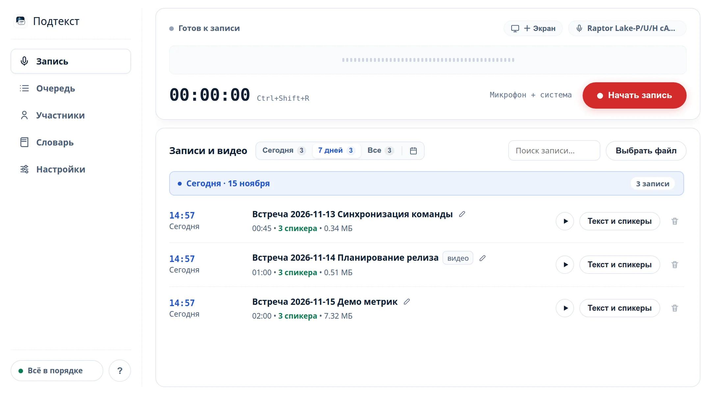

Локальная расшифровка встреч
Расшифровка аудио в текст. Без облака.
Записывайте встречи или загружайте готовые файлы. Подтекст распознаёт речь на вашем компьютере, разделяет спикеров, считает метрики речи и сохраняет протокол с таймкодами.
- Без подписки
- Без телеметрии
- Открытый код MIT
Windows 10/11 · macOS 13.4+ · Linux · Android (экспериментально)

Приватность по архитектуре
Записи остаются вашими
Не «надёжное облако», а отсутствие облака для записей и текста. Обработка идёт на вашем компьютере.
Политика конфиденциальностиОстаётся на устройстве
- Аудио- и видеозаписи
- Текст, таймкоды и экспорт
- Участники и голосовые отпечатки
- Статистика использования
Сеть нужна только для
- Загрузки открытых моделей по вашей команде
- Скачивания ffmpeg и GPU-пакета по вашей команде
- Проверки новой версии на GitHub
В этих запросах нет аудио, расшифровок и идентификаторов пользователя. Обновление устанавливается только по кнопке. После загрузки моделей запись, распознавание и экспорт работают без интернета.
От звука к протоколу
Три шага - всё в одном окне
Можно записать звонок с раздельными каналами или взять готовый файл. После распознавания текст легко проверить и забрать в свою систему.
- 01
Запишите или выберите файл
Микрофон и звук звонка сохраняются раздельно. Запись стартует из окна, трея или глобальной клавиши; вместе со звуком пишется и экран - видео и звук в одном MP4. Готовые файлы добавляются перетаскиванием и расшифровываются по очереди.
- 02
Запустите расшифровку
GigaAM-v3 распознаёт русский язык, Whisper Turbo понимает более 30 языков. Приложение разделяет реплики по спикерам, узнаёт знакомые голоса и учитывает словарь до 500 терминов, оценивая уверенность каждого слова.
- 03
Проверьте текст и соберите итоги
Найдите фразу по таймкоду, исправьте текст и уточните спикеров. Встроенная модель Qwen составит краткий итог с решениями и задачами, а панель метрик покажет долю речи, монологи и паузы. Для экспорта доступны Markdown, TXT, DOCX, PDF (через печать) и JSON.
Возможности
Что уже работает и что дальше
В версии 0.9.9 - точнее разделение спикеров и узнавание сохранённых голосов, быстрее расшифровка; в AppImage снова воспроизводится записанное видео. Ниже: что уже доступно и что остаётся в планах. Без обещаний дат релизов.
Полная дорожная карта-
Уже в 0.8.0
Метрики речи
Доля речи и перехваты по участникам - перехваты для записей с раздельными каналами, одновременная речь, длина монологов, темп и паузы. Быстрый переход к самому длинному монологу, первой длинной паузе и первому перехвату.
- Кто сколько говорил
- Где монолог затянулся
- Где речь шла одновременно
- Насколько хороша запись
Метрики считаются на устройстве, аудио никуда не отправляется. Рейтингов и оценки личности нет; личная базовая линия показывает отклонения высоты голоса и громкости от прошлых встреч. Что нового в 0.8.0
-
Дальше
Проверенные компоненты
Подтекст показывает, какие версии моделей и ffmpeg входят в эту сборку и когда их закрепили. Новые версии моделей приходят с обновлением приложения, ffmpeg устанавливается по кнопке. Фоновой проверки новых версий приложение не делает.
-
В перспективе
Субтитры, таймлайн и методики
- СубтитрыФайлы SRT и VTT из таймкодов реплик для плееров, видеоредакторов и платформ.
- Метки на таймлайнеМонологи, паузы и перехваты на шкале записи, чтобы переходить к ним одним кликом.
- Свои шаблоныСемь шаблонов уже работают. Дальше: пользовательские шаблоны и методики SPIN, STAR, SOAP.
- Ответы по содержаниюВопросы к расшифровке встречи.
Вопросы и ответы
Перед первой записью
Коротко о стоимости, моделях и совместимости. Не нашли ответ? Задайте вопрос на GitHub.
Задать вопросПриложение действительно бесплатное?
Да. Подтекст распространяется по лицензии MIT, без подписки и ограничения минут. Добровольная поддержка автора не открывает дополнительные функции.
Нужна ли мощная видеокарта?
Нет. Распознавание работает на процессоре, итоги на Qwen при желании ускоряются видеокартой. Для GigaAM-v3 нужно от 1,5 ГБ оперативной памяти, для Whisper: от 4 ГБ свободной памяти. Для локальных итогов на Qwen3-4B рекомендуется от 6,5 ГБ свободной памяти. Базовый комплект моделей занимает около 530 МБ на диске, модель итогов: 2,33 ГБ.
Можно расшифровать готовый аудиофайл?
Да. Перетащите файл в приложение или нажмите «Выбрать файл». Поддерживаются MP3, WAV, M4A, OGG, Opus, FLAC и MP4; для MKV, WebM, MOV и AVI нужен ffmpeg.
Какие операционные системы поддерживаются?
Windows 10 и 11, Linux и macOS 13.4+ на Apple Silicon. Android-версия экспериментальная: запись только с микрофона, без системного звука и видео; APK для Android - в релизах на GitHub.
Можно использовать программу для конфиденциальных разговоров?
Да, но локальная обработка не заменяет правила вашей организации и закон. Предупреждайте участников о записи, защищайте диск и соблюдайте профессиональные обязанности.
Независимая разработка
Пользуетесь - помогите проекту расти
Подтекст бесплатен для всех. Можно поддержать автора чаевыми, звездой на GitHub или отчётом об ошибке.